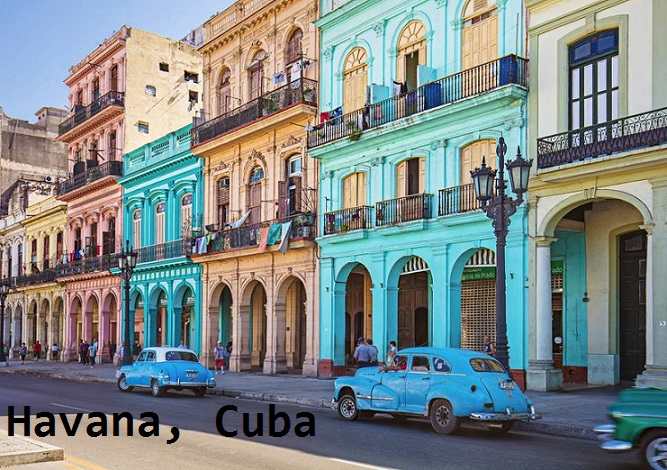
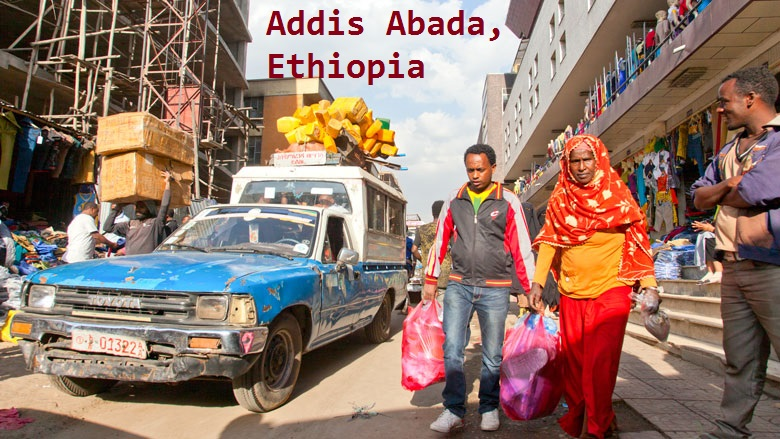
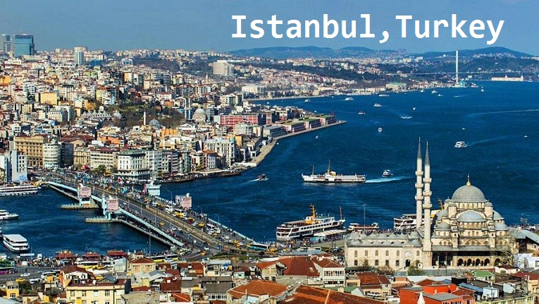
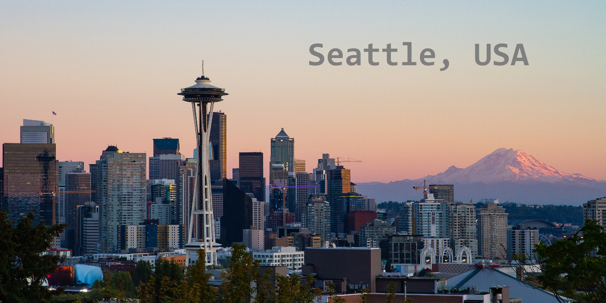
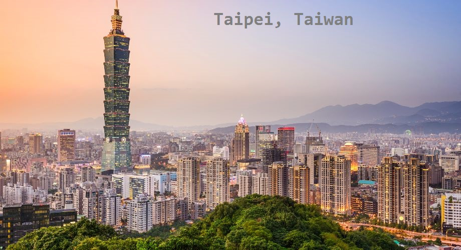
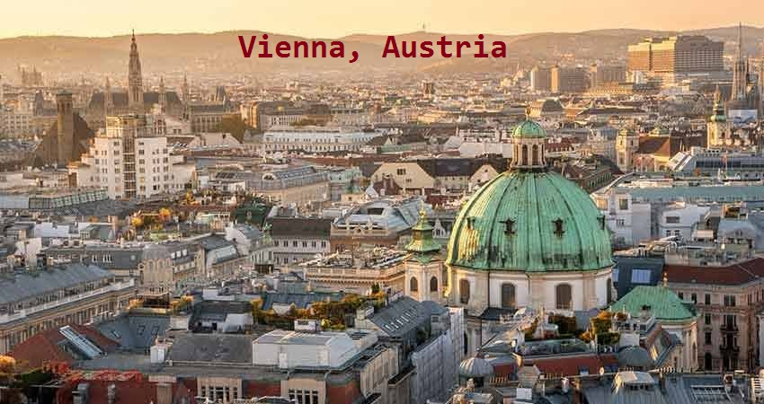
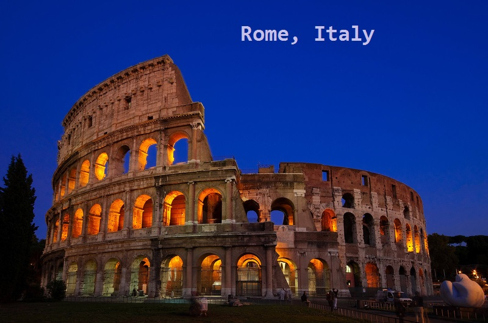

If it happens that you find yourself in one of these cities, you must know that it is a big chance that you have one of the best coffees that you`ve ever had.







If you’re planning a trip to Cuba (if you’re either not American, or you’re a very persistent one), you’ll find that this much-maligned country offers a slew of strong and often sweet coffee drinks. Espresso is the popular drink component of choice, which you can get as a Café Cubano (espresso shot brewed with sugar) or a cortadito (espresso shot with milk). Cuban coffee is a bit of an acquired taste, but those who drink it say you quickly learn to prefer it!
Considered the “birthplace of coffee”, and one of the world’s top coffee bean producers today, it’s no surprise that coffee is an important part of Ethiopian culture. If you have friends or relatives there, or you makes some new friends, expect to be invited to a coffee ceremony. You’ll enjoy roasting and grinding the beans, then brewing them in a clay pot before finally enjoying the final product with your hosts.
Turkey is known for its rich, dark coffee beans. They have a unique method for it as well. Turkish baristas grind beans into a fine meal, and boil them both with or without sugar in a cezve, a specially made pot for Turkish coffee. They don’t use sifters, so the cups of coffee are given a moment to let the grounds settle to the bottom before being served.
In Seattle you’ll find coffee shops both upscale industrial-chic and artsy hipster, and varieties in between. Seattlites have pretty strong opinions about who makes the best coffee
Taiwanese are particularly enamored with brewed coffee drinks over espresso, though espresso is widely available at more commercial chains/shops. Expect coffee beans in Taipei and other parts of Taiwan to be freshly roasted and high quality, and a preference for slower brewing to get the best flavor.
When it comes to coffee, Vienna goes hard: the city had its coffee shops listed as “intangible heritage” by UNESCO in 2011. Vienna cafes pride themselves on their atmosphere, taking the furnishings and decoration of shop interiors quite seriously. These spaces are great social or people-watching atmospheres. Viennese particular enjoy cappuccinos and espresso drinks, as well as the local Wiener Melange
Italy is known for its love of quality food, and the same applies to the coffee. Rome is packed with caffès that keep the city running. Coffee brewers take their business very seriously, so that you rarely meet a watered-down cup.